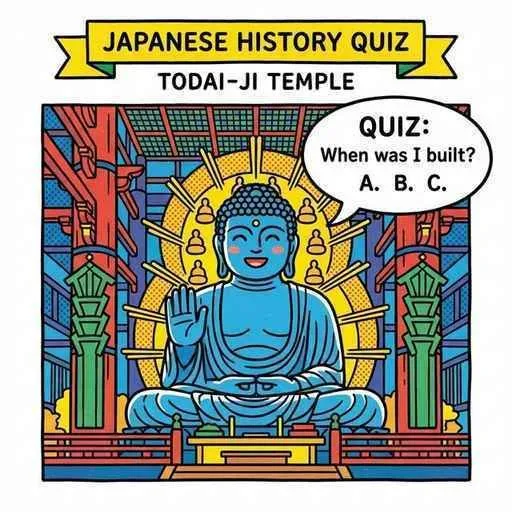
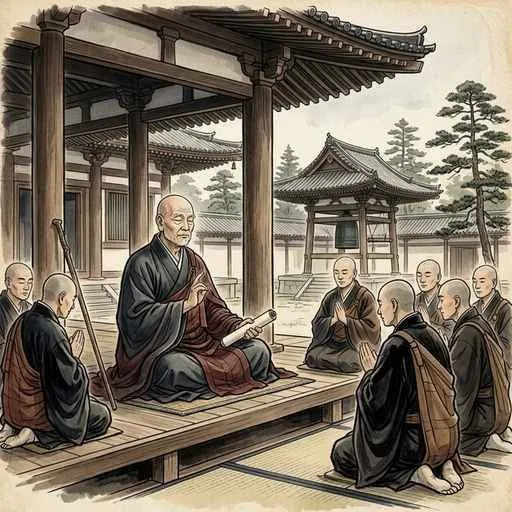
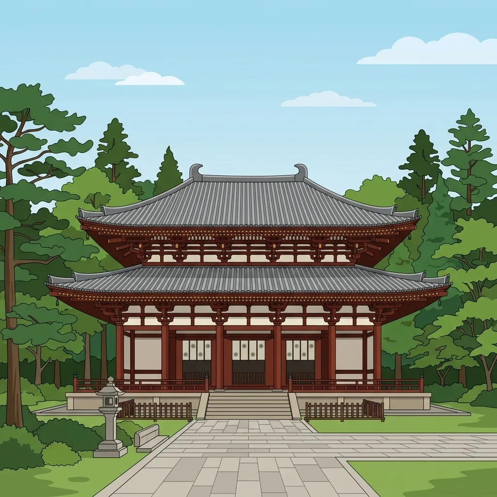
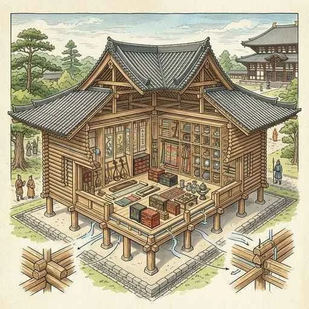
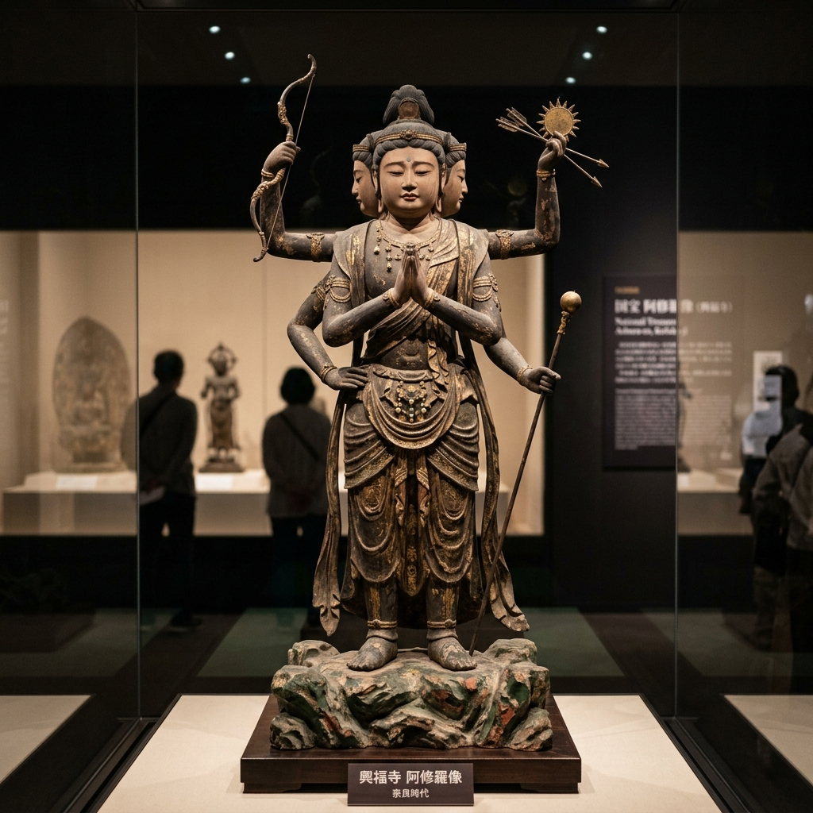
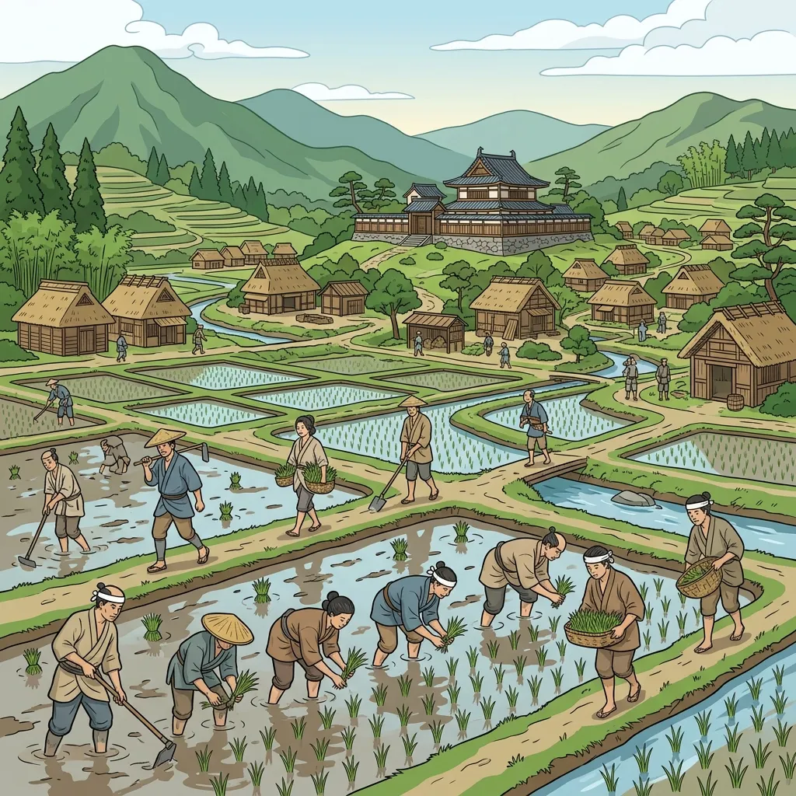

8. 奈良時代と仏教の政治
平城京への遷都後、日本は華やかな都を築く一方で、大地震、凶作、天然痘（伝染病）の大流行、そして政治の主導権をめぐる貴族たちの激しい反乱（藤原広嗣の乱など）に悩まされていました。この終わりの見えない社会の不安に対し、仏教の「祈り」の力によって国を一つにまとめようとしたのが聖武天皇です。今回は、大仏づくりの大事業と、その中で活躍した人々のドラマ、そして公地公民の原則を覆した大改革について解説します！
1. 聖武天皇の政治と「鎮護国家」
相次ぐ天災や疫病から国を守るため、聖武天皇（しょうむてんのう）は仏教の力で国を護り、社会を安定させようとする鎮護国家（ちんごこっか）の思想を取り入れました。この思想のもと、聖武天皇は全国に数々の巨大プロジェクトを命令しました。
- 地方の各国に、国の平和を祈るための寺院である国分寺（こくぶんじ）と国分尼寺（こくぶんにじ）を建てるよう命じました。
- 全国の国分寺の総本山として、都（奈良）に国で最も大きな寺である東大寺（とうだいじ）を建立しました。
また、聖武天皇の后である光明皇后（こうみょうこうごう）（藤原不比等の娘で、皇族以外で初めて皇后となった人物）も、仏教を深く信仰し、貧しい人々や孤児を救う「悲田院（ひでんいん）」や、病人に薬を与える「施薬院（せやくいん）」などの社会福祉施設を設立して天皇の政治を支えました。
図1：度重なる大災害や疫病を仏教の力で鎮めようと立ち上がった「聖武天皇」
2. 東大寺の大仏建立と「行基」「鑑真」の活躍
聖武天皇の最大の事業が、東大寺の金堂に安置する巨大な銅像、大仏（盧舎那仏・るしゃなぶつ）の造立です。この空前絶後の大事業を支え、また日本の仏教の発展に命を懸けたのが、次の2人の重要な僧侶たちです。
① 民衆のリーダー「行基」
当時、朝廷は民間での勝手な仏教布教を禁止しており、僧の行基（ぎょうき）は当初、朝廷から厳しく弾圧されていました。しかし行基は弾圧に屈せず、一般の民衆に仏教の教えを説きながら、困窮する人々のために各地に橋を架け、ため池を作り、道路を整備するなどの社会事業を次々と行いました。
民衆から絶大な支持を得た行基の影響力に目をつけた朝廷は、大仏建立に必要な巨額の寄付を集め、大勢の人手を取りまとめるため、行基に大仏造立への協力を要請しました。行基はこれを引き受け、民衆を率いて大仏完成に多大な貢献を果たし、のちに僧侶の最高位である「大僧正（だいそうじょう）」を授けられました。
図2：民衆のために尽力し、大仏建立の中心的役割を果たした「行基」のイメージ

図3：国中の人々の技術と信仰を結集して造立された東大寺の「大仏（盧舎那仏）」
② 命を懸けて戒律を伝えた「鑑真」
日本の仏教には「誰がお坊さんを正式に認定するのか（戒律を授けるか）」という基準がなく、勝手にお坊さんを名乗って税を逃れる人が多く存在していました。困った朝廷は、唐から正式な戒律を伝えてくれる高僧を招くことにしました。
この大役を引き受けたのが、唐の僧である鑑真（がんじん）です。当時、唐から日本へ渡る航海は命がけでした。鑑真は激しい暴風雨による遭難、弟子たちの反対、さらに旅の途中で両目を失明するというあまりにも過酷な試練に見舞われました。しかし、強い信念で渡海を続け、実に6回目の航海でようやく日本へ到着しました（753年）。
来日した鑑真は、聖武天皇や多くの僧たちに正しい戒律を授け、奈良に天平様式の粋を集めた寺院である唐招提寺（とうしょうだいじ）を建立して、日本の仏教の質を大きく引き上げました。

図4：5度の遭難で失明しながらも執念で来日を果たした唐の僧「鑑真」

図5：鑑真が戒律を授ける道場として開き、美しい建築を残した「唐招提寺」のイメージ
3. 国際色豊かな「天平文化」
聖武天皇の時代を中心に、平城京で栄えたきらびやかな仏教文化を天平文化（てんぴょうぶんか）と呼びます。この文化は、遣唐使の活発な往来によってもたらされた「唐」の高度な文化や、シルクロードを経由して伝わったペルシャやインド、ギリシャなどの西洋の風を取り入れた、極めて国際色豊かな文化である点が特徴です。
① 遣唐使と阿倍仲麻呂の悲劇
命がけで唐へ渡った日本の知識人や僧たちも文化の発展に貢献しました。その一人である阿倍仲麻呂（あべのなかまろ）は、遣唐使として唐へ渡って猛勉強し、唐の難関国家試験（科挙）に合格。皇帝・玄宗に極めて重用されて高官に上り詰めました。のちに日本への帰国を試みるも、乗った船が嵐で漂流して帰国を断念。再び唐に戻ってその地で一生を終えました。彼が故郷を想って詠んだ「天の原ふりさけ見れば 春日なる三笠の山に出でし月かも」の歌はあまりにも有名です。
② 「正倉院」と校倉造
東大寺の境内にある正倉院（しょうそういん）は、聖武天皇の遺品や、世界中から集まった貴重な美術工芸品が多数収められている「シルクロードの終着点」と呼ばれる宝庫です。正倉院の建物は、断面が三角形の木材を井桁に積み上げて壁を作る校倉造（あぜくらづくり）と呼ばれる独特の建築様式で作られており、木材が外気の湿気を吸って膨張・収縮することで室内の湿度を一定に保つという優れた機能があり、1300年もの間、奇跡的に宝物を守り抜きました。

図6：奇跡的な保存技術を持つ校倉造で建てられた東大寺の「正倉院」
③ 天平彫刻の傑作「阿修羅像」
この時代には、粘土を固めて作る泥像（塑像）や、漆を何度も塗り固める技法（乾漆像）による、人間の感情をリアルかつ繊細に表現した彫刻が多く作られました。その最高峰が、奈良の興福寺に安置されている三つの顔と六つの腕を持つ阿修羅像（あしゅらぞう）です。哀愁を帯びた少年の表情が人々を魅了し続けています。

図7：天平文化を代表する、繊細な美しさを持つ興福寺の「阿修羅像」のイメージ
4. 公地公民の崩壊と「墾田永年私財法」
仏教の華やかな政治が進む陰で、国家の土台である「公地公民」の制度は致命的な崩壊を迎えていました。人口が増えるにつれて農民に与える口分田が不足し、さらに過酷な税から逃れて田んぼを捨てる農民が続出したことで、税金が入らなくなり国庫は窮乏しました。
そこで政府は、農民たちに新しい田んぼ（墾田）を自分たちで開墾させ、何とかして耕作地を増やそうと計画し、743年に歴史的な大決断となる法律を出しました。墾田永年私財法（こんでんえいねんしざいほう）です。

図8：墾田永年私財法の制定により、全国で大規模な土地の開墾が進む様子
① 私有地である「荘園」の誕生
この法律は、「新しく開墾した土地は、永久に自分のものにしてよい（私有化を認める）」というものでした。これにより、「土地も人民もすべて国のもの」とする公地公民の原則は事実上、完全に崩壊しました。
資金や人手を持つ大貴族や東大寺などの大寺院は、競って農民を雇い、大規模な開墾を全国で開始しました。こうして生まれた、貴族や寺社の巨大な私有地を荘園（しょうえん）と呼びます。荘園は税金がかからないなどの特権（不輸・不入の権）をのちに獲得し、朝廷の支配の外でどんどん巨大化していきました。この土地の私有化と荘園の拡大が、のちに土地や財産を武力で守る「武士（さむらい）」が誕生する最大の伏線となっていきます。
🔥 テスト頻出！「仏教政治と荘園の発生」の整理
奈良時代の政治制度と社会変化は、入試や定期テストの記述問題で非常に好まれます！整理して覚えましょう！
① 行基 と 鑑真 の対比
| 僧侶名 | 出自 | 歴史的な功績 |
|---|---|---|
| 行基 | 日本（渡来人の末裔） | 弾圧を受けながらも民衆に布教し、橋や池などの社会事業を実施。聖武天皇に招かれ大仏建立の勧進（寄付集め）のトップとして貢献。 |
| 鑑真 | 中国（唐の高僧） | 5度の遭難と失明を乗り越えて来日。正しい仏教のルール（戒律）を日本に伝え、唐招提寺を建立した。 |
② 墾田永年私財法（743年）の影響の因果関係
人口増加による口分田不足・農民の逃散
⬇（開墾を促すために法律を制定）
墾田永年私財法（743年）の制定：開墾地の永久私有を許可
⬇（公地公民が崩壊）
貴族や大寺社による大規模開発 ➔ 土地の私有化が進み、私有地である荘園（しょうえん）が急増した。